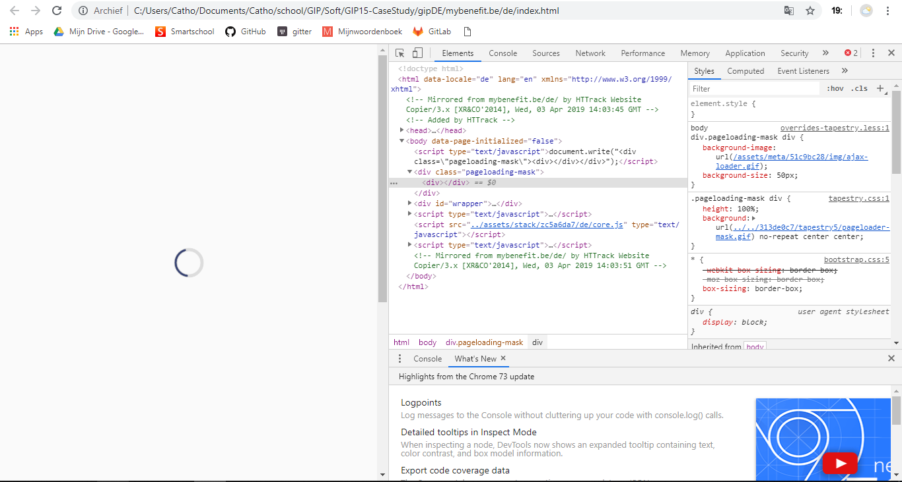

CaseStudy:
Van dynamische site naar statische website
Mijn case study gaat over een dynamische website (https://mybenefit.be/nl/). Een dynamische site is gesofisticeerd. Dynamische websites worden aangestuurd door een database waardoor het mogelijk is om de inhoud van de website beter af te stemmen op de website bezoeker. Dynamische websites bevatten een CMS (content management systeem) wat het mogelijk maakt om zonder tussenkomst van een webbouwer aanpassingen door te voeren op de website. De bedoeling van mijn case study is om deze dynamische site te veranderen naar een statische website. Statische website zijn eenvoudige en veelal weinig veranderende websites. Ze zijn opgebouwd uit html codes en kunnen alleen aangepast worden door iemand (een programmeur of website bouwer) die verstand heeft van html. Statische websites worden niet aangestuurd door een database en bevatten geen CMS (content management systeem). Een statische website heeft enkele nadelen aan een statische website, moet aangepast worden door webbouwer, webbouwer kost veel geld, beperkte mogelijkheden speciale programma’s nodig om aan te passen of uptodaten. Maar ook voordelen, zoals weinig ruimte op server, snel om te maken en laden zeer snel. Maar er zijn veel meer. Voor deze site is het beter om een statische website te hebben in plaats van een dynamische, omdat het een vrij eenvoudige site is die niet zoveel plaats op een server hoeft in te nemen. waarbij de HTML-pagina's reeds kant-en-klaar ingevuld op de webserver staan te wachten om opgevraagd te worden door een gebruiker. Een dynamische website moet niet verward worden met een interactieve website.
Via Httrack download ik de site op mijn eigen computer. Ik download de site 4 keer, in het Nederlands, Duits, Frans en Engels. Vervolgens open ik de index.html van de nederlandse versie.

Ik krijg deze pagina te zien en met inspecteren zoek ik waar de code van de loadpage kan vinden. Daarna zoek ik deze via Visual Studio Code in mijn html code en verwijder dat stukje code van de pageloading-mask.
https://github.com/cathoDr-immalle/GIP15-CaseStudy